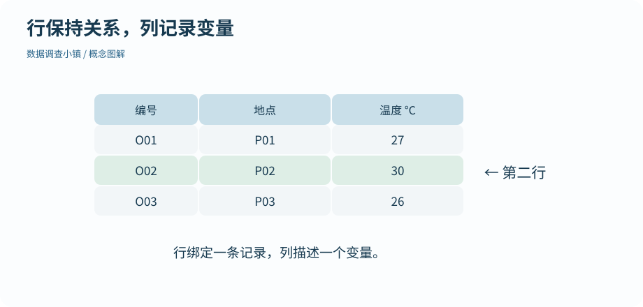

第 08 节 · 对象仓库
把记录放进一张表
温度和地点怎样保持一一对应？
理解数据框的一行一列，安全提取、筛选和新增列。
本节目录
运行位置：打开练习包内的 r-lab.Rproj，在项目根目录运行本节脚本。安装与准备见第 02—04 节；第 13 节说明扩展包。
每行是一条记录，每列有自己的类型
数据框把等长的列组织在一起。地点列可以是文字，温度列可以是数字；同一行表示它们属于同一条记录。单独对温度列排序后再放回原表，会破坏对应关系，因此后面学排序时要一起移动整行。
图解 · 行保持关系，列记录变量

每行是一条记录，每列是一个变量。框出的第二行把地点与温度绑定在同一条观察中。
放大查看 ↗ 保存 SVG ↓# 数据调查小镇 · 第 08 节
# 在 r-lab 项目根目录运行；输出只写入 results。
records <- data.frame(site = c("P01", "P02", "P03"), temperature = c(27, 30, 26))
print(records)
print(dim(records))
print(records$temperature)
print(records[2, , drop = FALSE])
print(records[records$temperature >= 27, c("site", "temperature"), drop = FALSE])
records$temperature_f <- records$temperature * 9 / 5 + 32
print(records)site temperature 1 P01 27 2 P02 30 3 P03 26 [1] 3 2 [1] 27 30 26 site temperature 2 P02 30 site temperature 1 P01 27 2 P02 30 site temperature temperature_f 1 P01 27 80.6 2 P02 30 86.0 3 P03 26 78.8
方括号里有两个方向
records[行, 列] 用逗号分开行和列。records[2, ] 选择第二行的所有列；records[, "temperature"] 选择温度列；records$temperature 也是取这一列的常用写法。先说清“我要几行几列”，再写索引，会比盲试括号更可靠。
有些提取会自动简化结果。例如取一列时可能得到向量，而不是仍带行列结构的数据框。drop = FALSE 可以在方括号提取时保留表格结构。不是每一次都必须写它，但当后续步骤要求数据框时，它很有用。
条件与表格接起来
records$temperature >= 27 产生与行对应的逻辑向量，放进逗号前面就是筛选行。逗号后面的 c("site", "temperature") 列出保留的列名。结果可能比原表小，但你仍应知道每一行来自哪里。
dim() 返回行数与列数，nrow() 和 ncol() 分别查看一个方向，names() 查看列名。这些小检查能帮助你确认操作是否作用在预期维度。
新增一列，同时保留原单位
records$temperature_f <- records$temperature * 9 / 5 + 32 把摄氏温度换算为华氏温度，并保留两列。新增列的长度应与行数相符；不要依赖不清楚的循环回收来“凑够”行数。
这一节先使用很小的表，方便逐格核对。数据来自文件时，同样的行列规则仍然成立。行名也能给记录起名字，但本教材把稳定的记录编号保存在明确的列里，便于导出与连接。
动手试试
保留表格形状
只提取 records 的 site 一列，同时让结果仍然是数据框。
给我一点提示
列名在逗号后面，配合 drop = FALSE。
查看参考解法与解释
records[, "site", drop = FALSE] 保留一列数据框。records$site 返回该列向量，适合逐项处理，但结构不同。
带走这一点
下一节继续沿地图向前。也可以先修改本节例子中的一个值，解释输出为什么变化。
检查一下理解
records[2, ] 选择什么？
查看解释
逗号前是行，逗号后是列；留空表示这一方向全部保留。